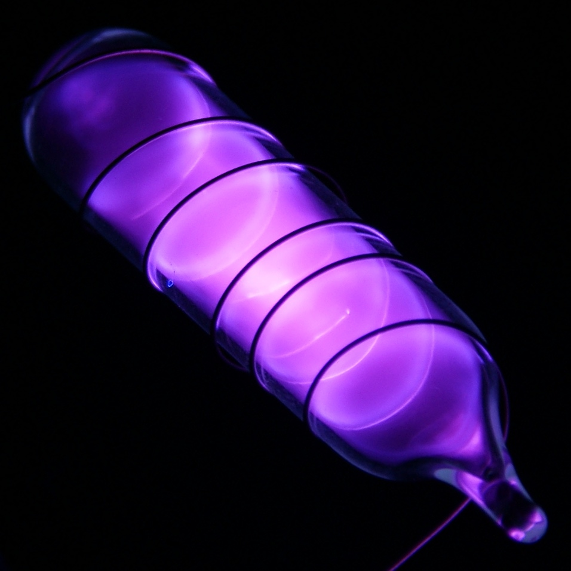
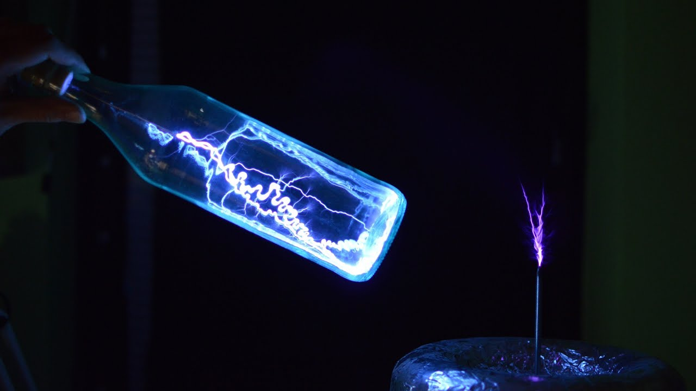

Аргон
Арго́н (химический символ — Ar, от лат. Argon) — химический элемент 18-й группы (по устаревшей классификации — главной подгруппы восьмой группы, VIIIA) третьего периода периодической системы Д. И. Менделеева, с атомным номером 18.Простое вещество аргон — инертный одноатомный газ без цвета, вкуса и запаха. Является третьим по распространённости химическим элементом в воздухе земной атмосферы (после азота и кислорода) — 0,93 % по объёму.

История открытия аргона начинается в 1785 году, когда английский физик и химик Генри Кавендиш, изучая состав воздуха, решил установить, весь ли азот воздуха окисляется. В течение многих недель он подвергал воздействию электрического разряда смесь воздуха с кислородом в U-образных трубках, в результате чего в них образовывались всё новые порции бурых оксидов азота, которые исследователь периодически растворял в щёлочи. Через некоторое время образование окислов прекратилось, но после связывания оставшегося кислорода остался пузырёк газа, объём которого не уменьшался при длительном воздействии электрических разрядов в присутствии кислорода. Кавендиш оценил объём оставшегося газового пузыря в 1/120 от первоначального объёма воздухе. Разгадать загадку пузыря Кавендиш не смог, поэтому прекратил своё исследование и даже не опубликовал его результатов. Только спустя много лет английский физик Джеймс Максвелл собрал и опубликовал неизданные рукописи и лабораторные записки Кавендиша.
Аргон получают при низкотемпературной перегонке сжиженного воздуха в промышленных процессах разделения воздуха. Аргон используют в чёрной и цветной металлургии для создания инертной атмосферы и удаления газообразных примесей при производстве и обработке металлов и сплавов, при дуговой резке и сварке магниевых, алюминиевых и других лёгких сплавов, высоколегированных сталей, титана и других металлов, для заполнения ламп накаливания и люминесцентных ламп (сине-голубое свечение).
История аргона началась с разницы в числах — 1, 2507 и 1, 2565. Разница очень ничтожная: какие-то тысячные доли, третья цифра после запятой. <...> Открытие аргона в конце XIX века — это была победа точности, победа третьей цифры после запятой.
(Матвей Бронштейн)

Аргон химически инертен; для него известно лишь несколько малоустойчивых соединений. Аргон может входить в состав клатратов